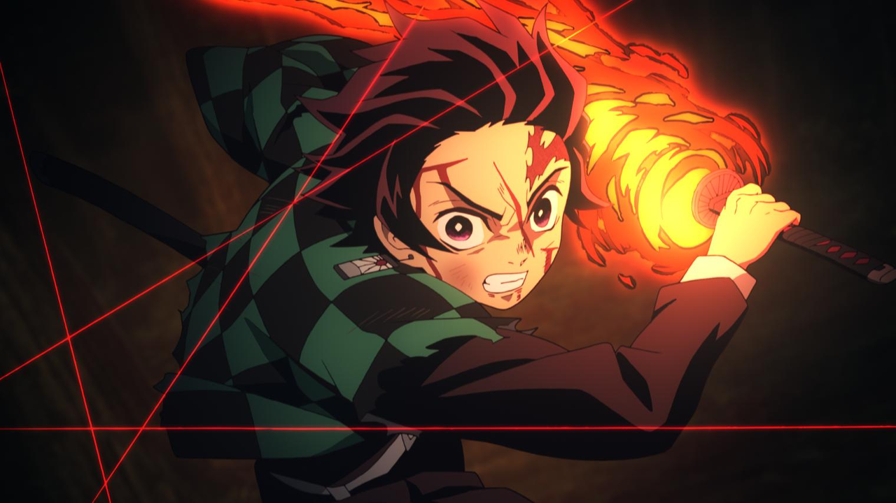
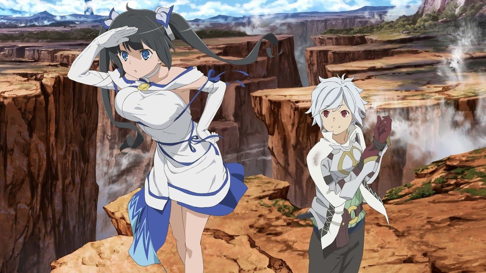
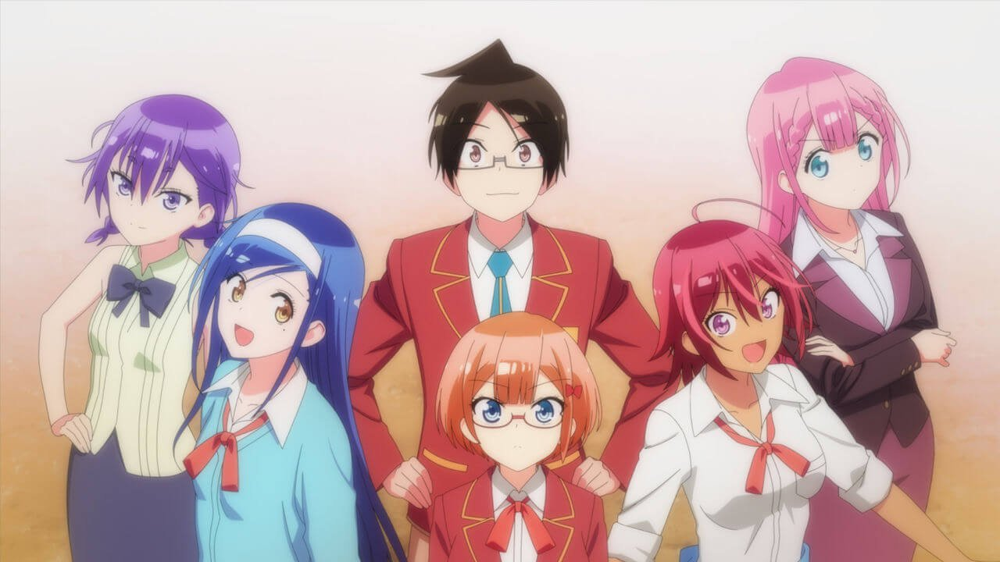
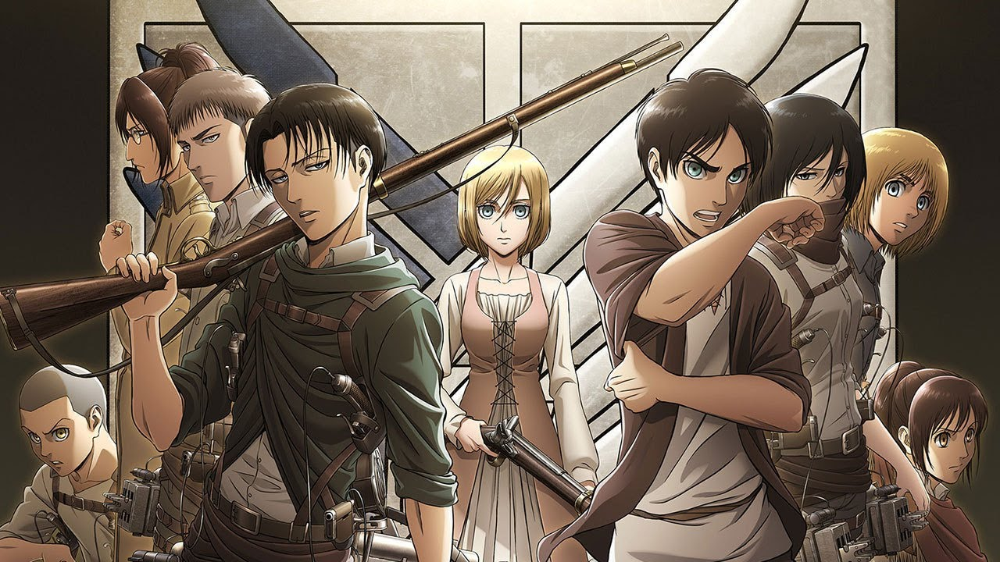

MY TOP 5 ANIME FOR FALL 2019
Enen no Shouboutai (Fire Force)

Synopsis
Spontaneous Human Combustion: a chaotic phenomenon that has plagued humanity for years, randomly transforming ordinary people into flaming, violent creatures known as Infernals. While Infernals make up the first-generation accounts of Human Combustion, the second and third generations became known as pyrokinetics—people gifted with the ability to manipulate and control their flames while remaining human. To combat the Infernal threat and discover the cause, the Tokyo Armed Forces, Fire Defense Agency, and Holy Church of Sol produced their answer: the Special Fire Force.
Kimetsu no Yaiba (Demon Slayer)
Synopsis
Ever since the death of his father, the burden of supporting the family has fallen upon Tanjirou Kamado's shoulders. Though living impoverished on a remote mountain, the Kamado family are able to enjoy a relatively peaceful and happy life. One day, Tanjirou decides to go down to the local village to make a little money selling charcoal. On his way back, night falls, forcing Tanjirou to take shelter in the house of a strange man, who warns him of the existence of flesh-eating demons that lurk in the woods at night.
When he finally arrives back home the next day, he is met with a horrifying sight—his whole family has been slaughtered. Worse still, the sole survivor is his sister Nezuko, who has been turned into a bloodthirsty demon. Consumed by rage and hatred, Tanjirou swears to avenge his family and stay by his only remaining sibling. Alongside the mysterious group calling themselves the Demon Slayer Corps, Tanjirou will do whatever it takes to slay the demons and protect the remnants of his beloved sister's humanity.
Dungeon ni Deai wo Motomeru no wa Machigatteiru Darou ka (Is It Wrong to Try to Pick Up Girls in a Dungeon?)
Synopsis
Life in the bustling city of Orario is never dull, especially for Bell Cranel, a naïve young man who hopes to become the greatest adventurer in the land. After a chance encounter with the lonely goddess, Hestia, his dreams become a little closer to reality. With her support, Bell embarks on a fantastic quest as he ventures deep within the city's monster-filled catacombs, known only as the "Dungeon." Death lurks around every corner in the cavernous depths of this terrifying labyrinth, and a mysterious power moves amidst the shadows.
Even on the surface, survival is a hard-earned privilege. Indeed, nothing is ever certain in a world where gods and humans live and work together, especially when they often struggle to get along. One thing is for sure, though: a myriad of blunders, triumphs and friendships awaits the dauntlessly optimistic protagonist of this herculean tale.
Bokutachi wa Benkyou ga Dekinai (We Never Learn)
Synopsis
Nariyuki Yuiga, an impoverished third-year high school student, works tirelessly to receive the VIP nomination, a scholarship that would cover all of his college tuition fees. In recognition of his hard work, the headmaster awards him the renowned scholarship.
However, this scholarship is given under one condition: he must tutor the school's geniuses in their weakest subjects! Joining his new brigade of pupils are the math maestro Rizu Ogata, who wants to study humanities; the literature legend Fumino Furuhashi, who wants to study science; and Yuiga's sports-savvy childhood friend, Uruka Takemoto, who is hopeless at everything else.
Bokutachi wa Benkyou ga Dekinai follows Yuiga as he tries to teach his three eccentric tutees in a series of strange and comedic antics. But as Ogata's and Furuhashi's ambitions conflict with their talents, will Yuiga be able to help his students achieve their dreams?
Shingeki no Kyojin (Attack on Titan)
Synopsis
Eren Jaeger’s battle against the Titans rages on! After fighting the Female Titan, he has no time to rest as a hoard approaches Wall Rose. With his ferocious abilities and a new plan, Eren and his friends set out to face the Titans head-on. But as they prepare for war, they begin to unearth terrifying secrets. What are the Titans really and where do they get their power—and who’s really on their side?
As they begin investigating the danger hidden within the walls, a colossal reveal shakes them to the core! More Titan shifters are identified, and worse yet, a new Abnormal appears—the horrifying Beast Titan! Does humanity stand a chance at survival with no one to trust and a new evil on the horizon?